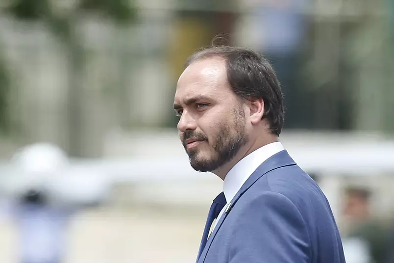

Notícias de Política
Senadores pretendem aprovar quebra de sigilo de Carlos Bolsonaro na CPI
Thais Arbex e Bárbara Baião, da CNN.

O grupo majoritário da CPI da Pandemia pretende aprovar, ainda nesta semana, a quebra de sigilos telefônico e telemático do vereador Carlos Bolsonaro
(Republicanos-RJ). O objetivo do chamado G7 é conseguir mapear o que consideram um assessoramento paralelo ao presidente Jair Bolsonaro (sem partido)
na gestão na pandemia.
Hoje, a quebra de sigilo é tida como mais importante do que uma convocação do vereador à CPI. A medida passou a ser discutida depois de o CEO da Pfizer
na América Latina, Carlos Murillo, afirmar em depoimento à Comissão Parlamentar de Inquérito que Carlos Bolsonaro participou de reunião do governo,
em Brasília, para tratar da negociação de vacinas.
A avaliação do grupo majoritário da CPI é a de que, até agora, os depoimentos estão indicando que o presidente adotava medidas em relação à pandemia
com base no aconselhamento de pessoas que não teriam competência para isso. Nos bastidores, esse assessoramento tem sido chamado de “ministério da doença”.
A comissão trabalha para esclarecer se, de fato, o governo atuou pela tese da imunidade de rebanho e deixou de investir em medidas capazes de conter a disseminação da Covid-19 no país.
A CPI também trabalha para aprovar no mesmo pacote a quebra de sigilos de Fabio Wajngarten, ex-secretário de Comunicação da Presidência da República.
A investida sobre o ex-auxiliar de Bolsonaro foi antecipada pela âncora da CNN Daniela Lima no último dia 7.
A partir dos dados recebidos, a CPI deve investir sobre novas quebras, entre as quais Filipe Martins, assessor internacional da Presidência.
Outro nome na mira é o do empresário Luciano Hang. A cúpula da CPI quer saber se ele financiou sites que disseminaram notícias falsas sobre a pandemia na internet.
Para isso, entendem que um dos caminhos será a partir da quebra de sigilo de Wajngarten e prestadores de serviços à Secretaria de Comunicação.
Hang é um dos alvos do inquérito sobre o assunto em andamento no STF.